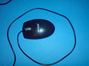

10.- Mouse

Concepto.
El ratón o mouse (del inglés, pronunciado [maʊs]) es un dispositivo apuntador, generalmente fabricado en plástico. Se utiliza con una de las manos del usuario y detecta su movimiento relativo en dos dimensiones por la superficie plana en la que se apoya, reflejándose habitualmente a través de un puntero o flecha en el monitor.
Hoy en día es un elemento imprescindible en un equipo informático para la mayoría de las personas, y pese a la aparición de otras tecnologías con una función similar, como la pantalla táctil, la práctica ha demostrado que tendrá todavía muchos años de vida útil. No obstante, en el futuro podría ser posible mover el cursor o el puntero con los ojos o basarse en el reconocimiento de voz.
El Nombre.

La forma del dispositivo originó su nombre
Aunque cuando se patentó recibió el nombre de "X-Y Position Indicator for a Display System" (Indicador de posición X-Y para un sistema con pantalla), el más usado nombre de ratón (mouse en inglés) se lo dio el equipo de la Universidad de Stanford durante su desarrollo, ya que su forma y su cola (cable) recuerdan a un roedor.
En América predomina el término inglés mouse mientras que en España se utiliza prácticamente de manera exclusiva el calco semántico «ratón». El Diccionario panhispánico de dudas recoge ambos términos, aunque considera que, como existe la forma adaptada, el anglicismo es innecesario. El DRAE únicamente acepta la entrada ratón para este dispositivo informático, pero indica que la palabra sólo es usada en España.
Hoy en Día
Habitualmente se compone de al menos dos botones y otros dispositivos opcionales como una «rueda», más otros botones secundarios o de distintas tecnologías como sensores del movimiento que pueden mejorar o hacer más cómodo su uso.
Se suele presentar para manejarse con ambas manos por igual, pero algunos fabricantes también ofrecen modelos únicamente para usuarios diestros o zurdos. Los sistemas operativos pueden también facilitar su manejo a todo tipo de personas, generalmente invirtiendo la función de los botones.
En los primeros años de la informática, el teclado era casi siempre la forma más popular como dispositivo para la entrada de datos o control de la computadora. La aparición y éxito del ratón, además de la posterior evolución de los sistemas operativos, logró facilitar y mejorar la comodidad, aunque no relegó el papel primordial del teclado. Aún hoy en día, pueden compartir algunas funciones dejando al usuario que escoja la opción más conveniente a sus gustos o tareas. Son más modernos.
| Anterior | Siguiente |
|---|